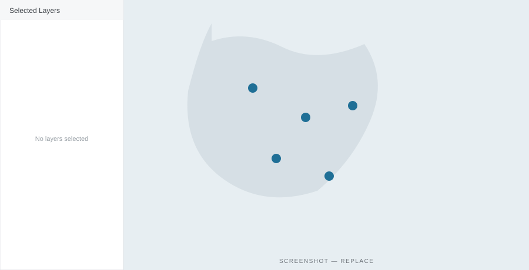

Learn about the Spatial Explorer
The Spatial Explorer lets you discover where environmental monitoring takes place across the FDRI catchments — bringing together FDRI's own sites alongside previous research, regulatory, water-company and citizen-science monitoring on a single interactive map.
Turn layers on and off to build the picture you need, zoom from a whole catchment down to an individual station, and click any site to see what it measures and who runs it.
It's the quickest way to understand what data exists, and where, before you dive into the time series itself. To learn more, load one of the FDRI Data Stories below.

1Selected Layers. The panel lists the data layers currently on the map. Use Add Layers to bring in monitoring networks and boundaries.
2Monitoring sites. Each marker is a station. Colour and shape indicate the network it belongs to.
3Site details. Click a marker to see what it measures, who operates it, and a link to its records in the catalogue.
4Catchment context. Boundary layers show the extent of each catchment so you can read sites in context.
5Zoom & pan. Move from a whole catchment down to a single reach; the basemap and labels rescale as you go.